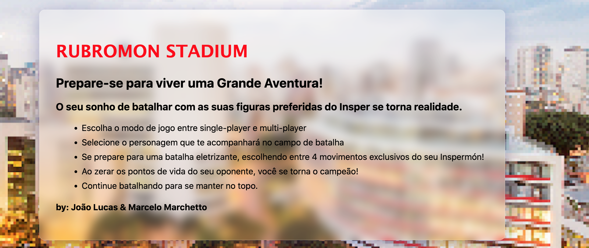
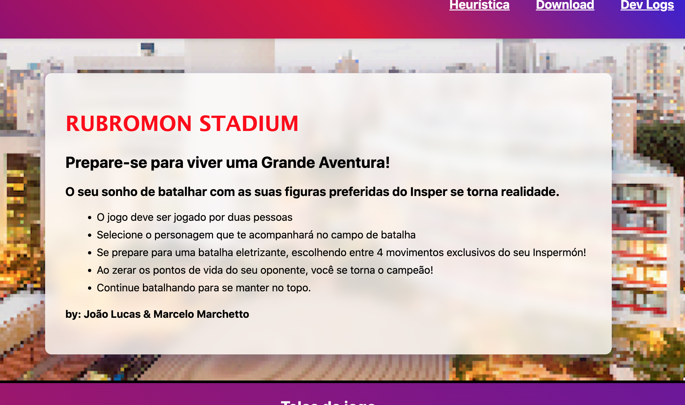
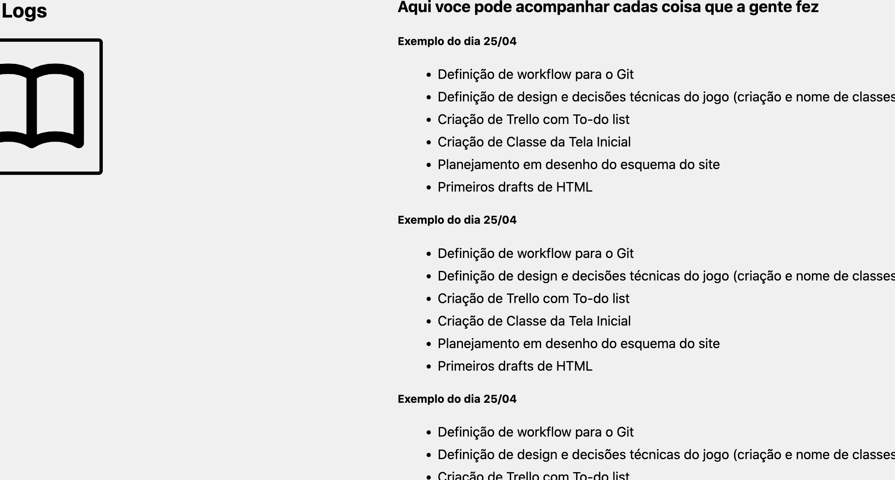
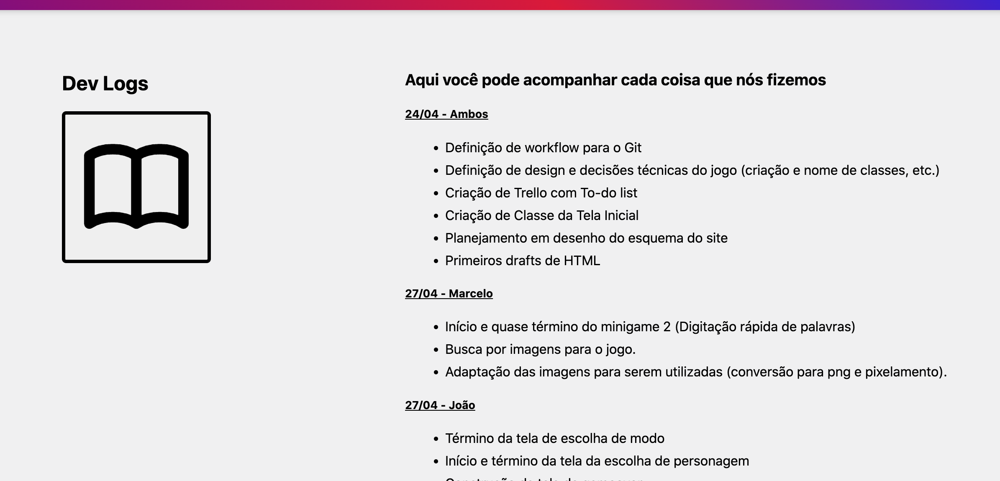
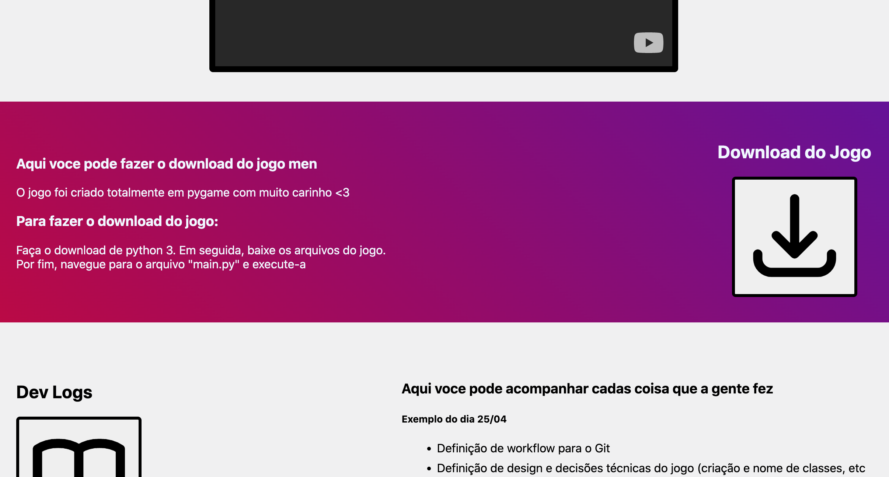
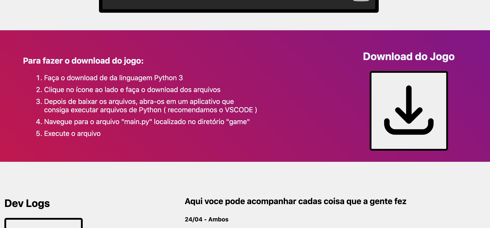
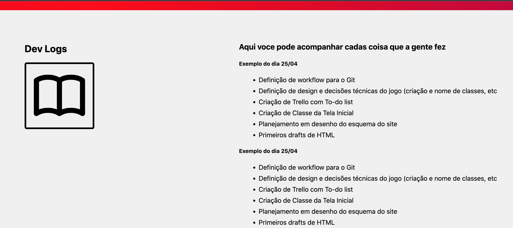
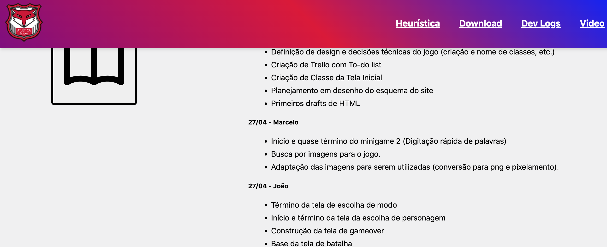
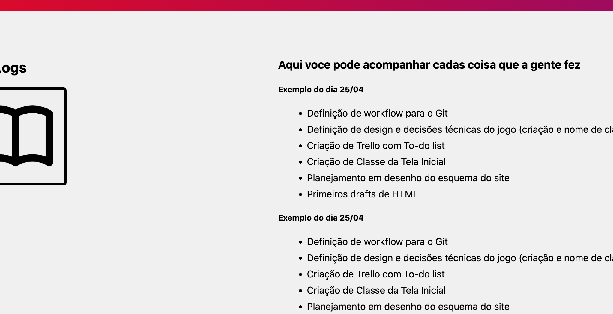
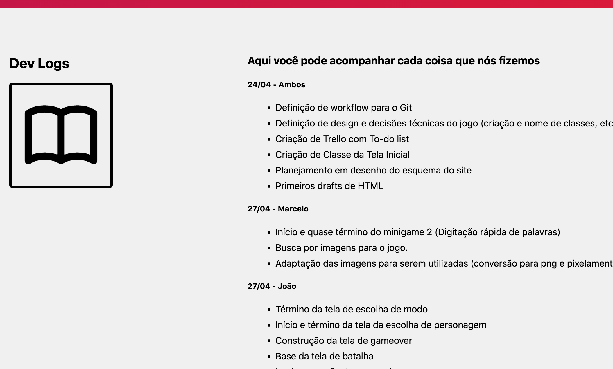

RUBROMON STADIUM
Prepare-se para viver uma Grande Aventura!
O seu sonho de batalhar com as suas figuras preferidas do Insper se torna realidade.
- O jogo deve ser jogado por duas pessoas
- Selecionem os personagens que te acompanharão no campo de batalha
- Se prepare para uma batalha eletrizante, escolhendo entre 4 movimentos exclusivos do seu Inspermón!
- Para cada ataque, ambos jogadores jogarão um minigame. Se o atacante se sair melhor,
seu
movimento terá o dano aumentado. Caso contrário, o defensor sofrerá menos dano! - Ao zerar os pontos de vida do seu oponente, você se torna o campeão!
- Continue batalhando para se manter no topo.
by: João Lucas & Marcelo Marchetto
Telas do jogo


Vídeo do Jogo:
Para fazer o download do jogo:
- Faça o download da linguagem Python 3
- Clique no ícone ao lado e faça o download dos arquivos do jogo
- Depois de baixar os arquivos, abra-os em um aplicativo que
consiga executar arquivos de Python ( recomendamos o VSCODE ) - Navegue para o arquivo "main.py", localizado no diretório "game"
- Execute o arquivo!
Aqui você pode acompanhar cada coisa que nós fizemos!
24/04 - Ambos
- Definição de workflow para o Git
- Definição de design e decisões técnicas do jogo (criação e nome de classes, etc.)
- Criação de Trello com To-do list
- Criação de Classe da Tela Inicial
- Planejamento em desenho do esquema do site
- Primeiros drafts de HTML
27/04 - Marcelo
- Início e quase término do minigame 2 (Digitação rápida de palavras)
- Busca por imagens para o jogo.
- Adaptação das imagens para serem utilizadas (conversão para png e pixelamento).
27/04 - João
- Término da tela de escolha de modo
- Início e término da tela da escolha de personagem
- Construção da tela de gameover
- Base da tela de batalha
- Implementação de menus de texto
- Adaptação e teste de imagens no jogo
28/04 - Marcelo
- Finalização dos dois minigames.
- Finalização e envio do site
- integração de um minigame com o código principal do jogo
28/04 - João
- Melhora da tela de batalha
- Entrega site
- Integração do primeiro minigame com o código principal
- Decisão de personalização de todos os personagens e suas características
02/05 - Marcelo
- Padronização do código dos 4 minigames
- Criação de sprites para fundos de tela
02/05 - João
- Implementação de todos os 4 minigames no código principal
- Música de batalha
- Sprites de batalha e seleção de personagem
- Animação de entrada de batalha
- Melhora de assets e sprites
04/05 - Marcelo
- Finalização do site de acordo com as melhorias propostas por colegas
- Coleta de sons para serem colocados no game
- Criação de mais imagens para serem colocadas
04/05 - João
- Finalização da primeira versão entregável do Jogo
- Implementação de sons e músicas novas
- Implementação de novas imagens no jogo
- Correção de Bugs
- Eliminação do singleplayer
Correspondência entre o sistema e o mundo real:
- O "para fazer o Download do jogo" não leva em conta um usuário que nunca usou o Python
e não dá as orientações de navegação no terminal do computador necessárias.
Consistência e padronização:
- A diferenciação entre título e subtítulo do DevLog não é suficientemente contrastante - Nome / O que fez.
- A pontuação textual do site é inconsistente
ex: "aqui voce pode acompanhar cadas coisa" "aqui voce pode fazer o download do jogo men" - A capitalização é inconsistente ex: "28.04 integração de um novo minigame"
- Os ícones utilizados consistentes tanto internamente, quanto externamente
- Na página de Dev logs, o botão e o título se encontram no meio,
assim criando uma inconsistência em relação à tela principal e a de download
Reconhecimento ao invés de memorização:
- Sugestão: os botões iniciais de redirecionamento da página,
ou seja, o cabeçalho, poderiam acompanhar o movimento do usuário
Estética e design minimalista:
- A tentativa de usar design minimalista no trecho do vídeo acabou por chamar
mais atenção para os espaços vazios nos lados ao invés de destacar o vídeo em si. - A imagem no fundo do texto inicial compete a atenção com o texto sobreposto
(embaixo de Rubromon Stadium) por estar em uma cor clara.
Ajuda e documentação:
- Mesma queixa da Heurística 2 sobre ajuda para download, etc.
Antes e depois do Site
Problema 1 - Baixa visilibilidade no título.
Solução - aumentar o Blur do background

Antes

Depois
Problema 2 - Falta de Contraste
Solução - sublinhar subtítulos para destaque

Antes

Depois
Problema 3 - Instruções para download não eram claras
Solução - adicionar mais passos para instalação

Antes

Depois
Problema 4 - Header não era fixo
Solução - Fixar a div do header

Antes

Depois
Problema 5 - Pontuações e gramática
Solução - Revisão textual

Antes

Depois